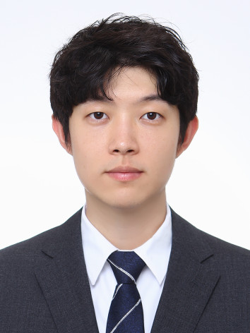

THE TEAM
People
강원대학교 미생물학 연구실의 구성원을 소개합니다.
Principal Investigator

Principal Investigator
강우림 Woorim Kang, Ph.D. / Assistant Professor
Department of Biological Sciences, Kangwon National University
미생물이 질환의 발병과 치료 반응에 미치는 영향을 연구합니다. 임상 코호트 분석과 균주의 배양 및 기능 실험으로 작용 기전을 밝히고, 개인별 장내미생물 특성에 맞는 정밀영양 치료제를 개발합니다.
Education
- 2016–2022박사, 경희대학교 나노의약생명과학과Ph.D., Life & Nanopharmaceutical Sciences, Kyung Hee University
- 2012–2016학사, 경희대학교 생물학과B.S., Biology, Kyung Hee University
Experience
- 2025–현재조교수, 강원대학교 생명과학과Assistant Professor, Dept. of Biological Sciences, KNU
- 2019–2025CJ Bioscience (ChunLab)Microbiome R&D
Graduate Students

M.S. Student
김권영

M.S. Student
최예빈
Undergraduate Interns

정다은
Undergraduate Intern

류하정
Undergraduate Intern

박선영
Undergraduate Intern

권준성
Undergraduate Intern